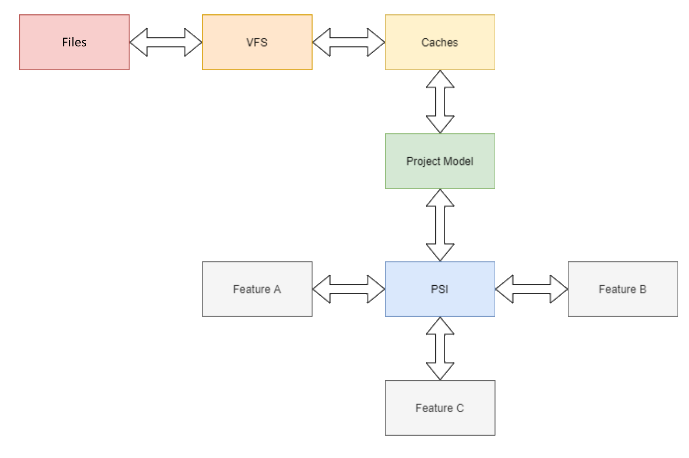

Handling Projects in IDE
IDE Development Course
Andrew Vasilyev
Today's Agenda
- Project Model
- Virtual File System
- Program Structure Interface
- Caching
- Unit of Work
Project Model
Understanding "Project"
A "project" is a detailed organizational structure that encompasses all the necessary files, configurations, settings, and resources required for developing a specific software application or solution. It functions as the primary unit for managing and organizing work within an IDE.
Components of a "Project"
Source Code Files: These are files written in programming languages like Java, C++, Python,
etc.
Resource Files: These include images, configuration files, and data files, etc.
Dependencies: These are the libraries, modules, or packages that the project relies on.
Build Configuration: These are instructions on how to compile, run, and debug the software.
Project Metadata: This includes information about the project's settings, configurations, and
structure, including compiler settings, debug configurations, and other environment-specific
parameters.
Database Configuration: This includes connections, database scripts, and other related setups
if the project interacts with databases.
Documentation: This includes comments, READMEs, or any other related documents.
Version Control Information: If the project is under version control (like Git, SVN), the IDE
might store information about commits, branches, etc.
Exploring Project Models
Project Models in IDEs represent the structure and organization of the projects, incorporating files, directories, dependencies, and configurations. They provide:
- An API to describe and manage project elements
- Notifications about project changes
- Facets to provide configured views of projects, e.g., projects with different sets of
referenced libraries depending on the target OS.
Types of Project Models
A project model can be constructed using:
- Project Folder
- VCS
- Build Configuration
- Metadata
Virtual File Systems
Understanding VFS
A Virtual File System (VFS) in an IDE acts as an abstraction layer that facilitates efficient interaction between the IDE and the underlying file system, offering a uniform interface to access files regardless of their location.

The Need for VFS
VFS is crucial for:
- Providing a universal API for working with files, irrespective of their actual location (on disk, in an archive, on an HTTP server, etc.).
- Detecting and tracking changes in files and enabling comparison between old and new versions.
- Enhancing performance and user experience by minimizing and optimizing IO operations.
- Allowing the addition of extra data attributes to a file.
Implementing VFS
1. Manage a persistent snapshot of files that have been requested through VFS.
2. Execute all operations with files on VFS.
3. Queue operations with actual files and execute them asynchronously on a single background thread, minimizing file lock duration.
4. Track and queue external changes. Execute them on the snapshot when the IDE requires a "refresh".
5. "Refresh" VFS on IDE startup, when switching from another application, etc.
6. Notify subscribers about changes.
Program Structure Interface (PSI)
What is PSI?
The Program Structure Interface (PSI) is a pivotal component in any JetBrains IDE. It enables the IDE to parse source code into a structured and navigable format, allowing developers to navigate, modify, and analyze the code efficiently.
The PSI organizes code into trees and graphs, representing the hierarchical and structural relationships between various elements of the source code, from classes and methods to variables and expressions.

PSI - Files and Modules
Semantic views of files and "file sets" can encapsulate other elements and provide different scopes of views from other modules.
PSI - Abstract Syntax Tree
A data structure is used to represent the contents of a file, where each node in the tree denotes a construct in the source code.
PSI - Declared Element
A declared element is "something that has a declaration." This can be a class declaration, a method declaration, or something unrelated to code - such as HTML elements, CSS classes, colors, and file system paths.
PSI - Reference
A reference allows any abstract syntax tree node to link to a declared element. The reference might be from a type name in a variable declaration and would link to the declared element of that type.
PSI - Type System
A "type system" is represented through an interface hierarchy, distinct from but related to the declared elements in a programming environment. It serves to model and describe the usage scenarios of declared elements, such as classes or types, which aren't adequately represented by the declared elements themselves.
PSI - Control Flow Graph
A control flow graph (CFG) is a graphical representation of all paths that might be traversed through a program during its execution. Nodes represent basic blocks, and edges represent possible flow of control.

PSI - Call Graph
A Call Graph is a representation of the calling relationships between subroutines (functions or methods) in a program.

Caching
Why cache?
Parsing and indexing of project files are expensive in terms of performance.
Therefore, all parsing and indexing should be incremental.
Caches are needed to store snapshots of project and PSI models and to allow their incremental updates.
What to cache?
- VFS
- PSI
- Symbol tables
- Analysis outcomes
- Everything else
Two kinds of caches
Persistent Caches
- Stored in a database file
- Can be restored after IDE or project reloading
- Can be loaded by parts
- Slow
In-memory Caches
- Stored in RAM
- Cannot be restored after IDE or project reloading
- Fast
Life of a typical cache
1. Build the initial state
2. Merge new data on updates from the file system or PSI
3. Drop
For a persistent cache:
1. Load from a disk
2. MergeLoad - load and merge an additional part from a disk
3. Save to a disk
Unit of Work
Why Transactions?
Transactional updates ensure data integrity and consistency by treating a series of operations as a single, indivisible unit of work, either fully completing or fully rolling back.
Atomicity: Guarantees all-or-nothing, preventing partial updates and
inconsistencies.
Consistency: Maintains system integrity by adhering to predefined rules.
Isolation: Manages concurrent modifications and prevents conflicts between
transactions.
Durability: Makes changes permanent, ensuring they survive subsequent
failures.
Undo Mechanism: Facilitates error recovery by rolling back erroneous
transactions.
Unit of Work
The Unit of Work is a design pattern in software development used to maintain a list of objects affected by a business transaction. It manages the entire process of tasks from start to end, ensuring cohesion and completeness in handling multiple changes.
Responsibilities: Manages transactional state, maintaining a list of tasks that are
either to be committed to the database or reverted in case of errors.
Benefits: Ensures data consistency, manages dependencies between tasks, and
optimizes performance by batching database operations.
Application in IDEs: It manages the transactions related to modifications in the
Program Structure Interface (PSI), ensuring consistency and integrity in project states.
How to Implement Unit of Work
- Create an instance of "unit of work"
- Register all operations
- Ensure that the model is available for updates (depending on the concurrency model)
- Execute all operations one by one on a locked part of the model
- If any operation fails - rollback all executed operations (or just restore the non-updated version
of the model)
Conclusion
Overview
Next: Language Processing Basics
We will dive into the basics of language processing where we will explore lexical analysis, syntax analysis, semantic analysis, and more to understand how IDEs process programming languages.
Questions & Answers
Thank you for your attention!
I'm now open to any questions you might have.